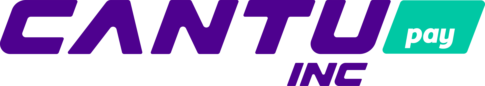
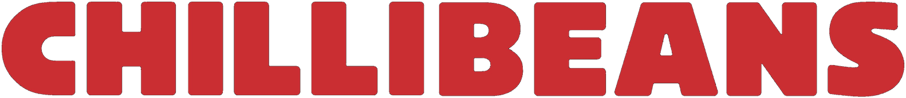
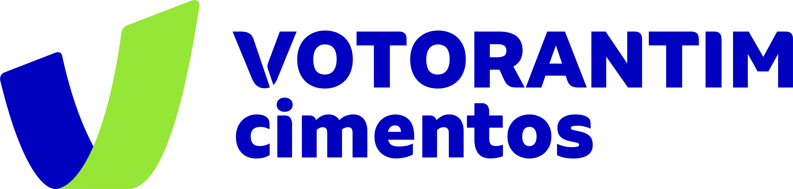

Demanda · Âncoras
Fortune 500 trazem suas PMEs
Marcas líderes co-brandam o cartão e abrem sua base de PMEs.



↓PMEs tomam crédito no cartão co-branded
Origina, faz underwriting, emite e liquida no PIX — T+0.
OriginaçãoUnderwritingEmissãoServicingLiquidação T+0
↑FIDC banca o crédito originado
Capital · Funding
FIDC banca o crédito
Off-balance e escalável — sem consumir o caixa da Robbin.
FIDC R$ 500M